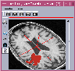

|  |
Dessin de R.O.I. dans Anatomist
|


|
Introduction
Vous pouvez maintenant oublier l'interface lourde précédente
d'Anatomist. Voici une nouvelle mouture, qui devrait vous simplifier la
tâche. L'interface de ROI peut être lancée de
nimporte quelle fenêtre anatomist contenant une image.
Pour l'obtenir :
Charger une image dans Anatomist
L'afficher dans une fenêtre (2D ou 3D).
Appuyer sur "F1"
Vous voyez alors une fenêtre de boite à outil s'ouvrir, qui
contient deux onglets (pour l'instant) : un onglet RoiManagement et un
onglet Paint.
Le premier vous permet d'ouvrir des sessions de ROI, de créer ou
d'ouvrir de nouvelles régions, et de les sauver. Le deuxième
vous permet de choisir votre pinceau, diverses options de dessins, mais
aussi de revenir sur vos pas si nécessaire.
Philosophie
Une fois l'interface de ROI lancée, vous n'avez plus besoin de la
fenêtre de contrôle pour gérer les ROI, qu'il s'agisse
de créatrion de session, de région ou d'entrées sorties,
mais aussi d'ouverture de nouvelles fenêtres de dessin. La fenêtre
de contrôle reste utile pour effectuer des fusions, charger des images,
gérer les référentiels et tansformations, etc.
Gestion de ROI
Interface
L'interface comprend un panneau et un menu. Toutes les actions passent
par le menu, tandis que le panneau vous permet de visualiser et de sélectionner
vos sessions, régions et images.
Cadre de travail
Le menu "FrameWork" vous permet de fixer le cadre dans lequel vous
allez dessiner. En d'autres termes, ce cadre déterminera les noms
possibles pour les différentes régions. Bien que vous puissiez
à tout moment de changer de cadre, nous vous recommandons fortement
d'en choisir un et de vous y tenir. En effet, si les cadres vous restreignent
quant aux noms que vous pourrez choisir pour vos régions, ils assurent
que lesdits noms sont conformes à ceux choisis par d'autres membres
du service, voire à la littérature. Des développements
concernant des mécanismes avancés de sélection de
régions sont en cours dans l'UNAF. Les cadres actuellement disponibles
sont les suivants :
Neuro
Utilisez ce cadre de travail lorsque vous dessinez des régions sur
les noyaux gris centraux et le cenrveau en général. Ce cadre
de travail ne contient pas les noms des sillons.
Sulci
Ce cadre de travail convient parfaitement pour le dessin ou la retouche
de sillons corticaux.
Rat_wb
Le cadre rat contient des noms de régions anatomiques propres au
rat, pour les travaux sur les oligo-nucléotides.
User Defined
Lorsqu'aucun cadre ne convient, ou que vous voulez rajouter des régions
inconnues du cadre sur lequel vous travaillez actuellement, sélectionnez
ce cadre de travail. Vous pourrez donner les noms que vous voulez à
vos régions.
Session
Une session de région d'intérêt correspond à
un unique fichier ROI. Elle peut contenir de très nombreuses régions
différentes, mais ayant chacune un nom différent.
Ouvrir une session de dessin
Commencez par sélectionnez l'image sur laquelle vous voulez dessiner.
Vous pouvez soit créer une nouvelle session, en passant par le menu
"Session->New", soit charger un fichier de ROI, en sélectionnant
dans le menu "Session->Open".
Changer de session
Vous pouvez avoir autant de sessions de dessin ouvertes que vous voulez,
même si, pratiquement, il est peu probable que vous dépassiez
deux ou trois sessions en même temps. Pour passer d'une session à
une autre, sélectionnez-la tout simplement dans le panneau Session.
Les régions dont la session est constituée apparaissent alors
dans le panneau Région, juste à droite.
Renommer une session
Pour renommer une session, double-cliquez sur son nom dans le panneau Session.
Une fenêtre apparaît vous demandant de saisir son nouveau nom.
Fermer la session
Si une session ne vous convient plus, vous pouvez la fermer, c'est-à-dire
la détruire. Pou ce faire, sélectionnée la dans le
panneau Session, puis sélectionnez dans le menu "Session->Close".
ATTENTION : vous perdrez toutes les régions qu'elle contient
si vous ne l'avez pas sauvée.
Sauver la session
Il est conseillé de sauver régulièrement votre travail,
au moins toutes les vint minutes, pour éviter les conséquences
d'un crash malheureux. C'est aussi utile lorsque vous avez terminé
votre travail pour la journée et que vous voulez fermer anatomist.
Pour sauver une session, sélectionnez la dans le tableau Session,
puis choisissez dans le menu "Session->Save As". N'oubliez pas de
terminer votre nom de ficher par .arg. Si vous l'oubliez, ce n'est pas
grave, changez dans une fenêtre Unix ou Linux le nom du fichier de
façon à rajouter le suffixe.
Votre session se trouve maintenant sur le disque sous la forme d'un
fichier .arg et d'un répertoire .data. Vous pourrez effectuer des
statistiques sur les régions dessinées avec la commande AimsVoiStat,
entre autres choses.
Si vous voulez retoucher plus tard votre région :
relancez Anatomist,
chargez l'image sur laquelle la session a été ouverte,
faîtes apparaître la Boite à Outils de ROI comme indiqué
ci-dessus.
sélectionnez dans le tableau Images l'image sur laquelle la session
a été créée.
chargez votre fichier de ROI en sélectionnant dans le menu
"Session->Open".
Régions
Une région d'intérêt dans Anatomist possède
plusieurs caractéristiques intéressantes, mais qui peuvent
vous troubler au premier abord.
Tout d'abord, fini les empilements de régions 2D pour simuler la
3D, vous pouvez désormais dessiner directement des régions
tridimensionnelles.
Ensuite, les régions 3D d'Anatomist sont des régions voxels,
et non des régions géométriques (qui seront implémentées
plus tard). Ceci signifie qu'il n'est plus nécessaire d'effectuer
des unions de régions géométriques pour obtenir votre
région finale. Vous pouvez dessiner petit bout par petit bout votre
région 3D en conservant le même nom.
Enfin, vous n'avez pas besoin d'avoir un fichier par région. Il
vous suffit d'avoir un fichier par session de ROI, la session contenant
un grand nombre de régions dessinées sur la même image.
Le fichier conserve tous les noms que vous aurez choisi et vous permettra
de retoucher vos régions même après avoir fermé
Anatomist.
Voici comment procéder pour gérer les régions d'une
même session.
Créer une nouvelle région
Sélectionnez la session à laquelle doit appartenir la région.
Sélectionnez dans le menu "Région->New", ou
tapez CTRL+N.
Une fenêtre apparaît vous demandant de choisir un nom de région
parmi les noms du cadre de travail sélectionné dans le menu
"FrameWork". Si votre cadre est "UserDefined", vous pouvez
saisir le nom que vous voulez.
La région apparait dans le panneau Region, et est maintenant sélectionnée.
Sélectionner une région
Cliquez tout simplement sur la région.
Dans la fenêtre de dessin, la région sélectionnée
apparaît toujours en rouge, tandis que les autres apparaissent dans
la couleur définie par le cadre de travail.
Renommer une région
Double-cliquez sur la région.
Une fenêtre apparaît vous demandant de saisir le nouveau nom
de région parmi les noms du cadre de travail sélectionné
dans le menu "FrameWork". Si votre cadre est "UserDefined",
vous pouvez saisir le nom que vous voulez.
Détruire une région
Sélectionnez la région à détruire dans le panneau
région.
Sélectionnez dans le menu "Region->Delete".
Exporter une région sous forme de masque
La plupart des commandes Aims travaillent sur des images, et certaines
demandent un masque. Vous pouvez utiliser ce module de ROI pour tracer
ces masques. Afin de sauver sur le disque la région (ET NON LA SESSION),
sous forme de volume 3D contenant 1 dans le masque dessiné et 0
en dehors :
Sélectionnez la région à exporter.
Sélectionnez dans le menu "Region->Export As Mask".
Détruire une région
Sélectionnez la région à détruire dans le panneau
région.
Sélectionnez dans le menu "Region->Delete".
Fusionner des régions
Vous pouvez segmenter un organe en plusieurs régions, afin par exemple
d'effectuer des statistiques spécifiquement dans une sous-partie
de l'organe. A tout moment, vous pouvez fusionner ces sous-parties pour
retrouver votre organe complet. Notez que ce n'est absolûment pas
nécessaire pour effectuer des statistiques sur la session entière.
Sélectionnez dans le menu "Region->Fusion".
Une interface s'ouvre, dans laquelle vous devez choisir les régions
à fusionner et le nom de la région issue de la fusion. Ce
nom est à choisir parmi les noms de régions à fusionner.
S'il ne vous convient pas, vous pourrez toujours renommer la région
par la suite comme indiqué dans "renommer une Région".
Note : ATTENTION : il est impossile d'effectuer un Undo sur
une fusion. Dans le doute, sauvez votre session au préalable.
Fenêtre de dessin
Afin de dessiner vos régions d'intérêt vous avez besoin
d'une ou plusieurs fenêtres Axiale, Sagittale, Coronale ou 3D, contenant
à la fois une image et la session en cours.
Sélectionnez la session en cours.
Sélectionner l'image sur laquelle vous voulez dessiner.
Sélectionnez dans le menu "Window" le type de fenêtre
adéquat, ou cliquez sur le bouton corresopndant du panneau Window.
Rafraichissement de l'interface
Lorsque vous chargez un graphe (à éviter) ou une image par
la fenêtre de contrôle d'Anatomist, vous devez pour les voir
apparaître dans l'interface de ROI cliquer sur le bouton "Refresh".
Dessin de région
Une fois votre session ouverte et mise dans une fenêtre, votre région
créée et sélectionnée, vous allez pouvoir dessiner
votre ROI.
Pour commencer, sélectionnez dans la fenêtre l'icone de dessin.
Dans la Boite à Outils, sélectionnez l'onglet "Paint".
Pinceau
Vous pouvez choisir trois types de pinceaux, de différentes tailles.
Point. La taille n'a pas d'importance pour ce pinceau, qui est un
voxel unique.
Disque. Ce cercle plein, au sens des voxels et non des mm, est de
taille variable et tracé dans le plan de coupe de la fenêtre
de dessin.
Boule. Cette sphète pleine, au sens des voxels et non des
mm, est elle aussi de taille variable. C'est un véritable objet
3D qui s'étend sur plusieurs coupes de part et d'autre de la coupe
visualisée dans la fenetre de dessin
Le curseur en dessous des boutons permet de régler la taille
du disque et de la sphère. Comme les disques et les sphères
sont définies sur des voxels, attention aux images fortement anisotropes,
qui les font apparaître comme des ellipses.
Modes
Plusieurs modes vous sont proposés pour vous faciliter la tâche
de dessin.
Mode "ligne". Lorsque ce mode est activé, les contours que
vous tracez sont continus. Sans lui, si vous dessinez rapidement, votre
pinceau laisse des traces éparses.
Mode "remplacement". Lorsque ce mode est activé, la région
dessinée efface les autres régions se trouvant sous le pinceau.
Il peut être intéressant de laisser ce mode déselectionné,
lorsque vous tracez une région jouxtant une autre région
déjà dessinée, afin de ne pas avoir à retracer
finement les frontières entre ces deux régions.
Mode "curseur lié". Lorsque ce mode est activé, si
vous visualisez la région à dessiner sur plusieurs incidences,
vous pourrez suivre votre tracé sur tous ces plans de coupes.
Transparence
Vous pouvez régler la transparence de la région sélectionnée.
Actions
Si votre dernier tracé (entre le moment ou vous pressez le bouton
de la souris jusqu'au moment où vous le relâchez) ne vous
plaît pas, vous pouvez revenir en arrière par le bouton "Undo".
Vous pouvez le faire autant de fois que vous le désirez, que cela
concerne un dessin ou un coup de gomme.
A l'inverse, si vous venez d'effectuer des "Undo", vous pouvez
faire revenir enavant par le bouton "Redo".
Vous disposez aussi d'un bouton pour tout effacer, mais vous ne pourrez
revenir en arrière (pour l'instant, car c'est un bug en cours de
correction).
Le dessin proprement dit
Tout ce que vous pouvez effectuer avec la souris et le clavier directement
sur une fenetre de dessin s'affiche si vous laissez quelques instants votre
curseur sur l'icone de dessin. En voici un résumé :
Bouton Gauche. Dessiner.
SHIFT+ BoutonGauche. Pot de peinture : remplit la region,
le mode de remplacement est pris en compte.
CTRL+ Bouton Gauche. Gommer. La taille
et le type de la gomme sont identiques à ceux du pinceau.
SHIFT+ Bouton Milieu. Zoom.
CTRL+ Bouton Milieu. Translation.
Visualisation
La vue 3d vous permet de visualiser au fur et à mesure du dessin
la forme tridimensionnelle de votre région, voire de votre session
de regions d'interet. Si vous avez besoin d'une représentation
plus jolie, avec des surfaces lissées, exportez les régions
à visualiser sous forme de masque et utilisez la commande AimsMesh,
avec un paramètre --smoothIt aux alentours de 50. En ouvrant les
fichiers mesh dans anatomist, vous pourrez les visualiser dansune fenêtre
3d.
Autre facon de faire (déconseillé)...
Passer en mode dessin:
C'est pas simple:
en gros:
Charger une image dans Anatomist
L'afficher dans une fenêtre (2D ou 3D)
Sélectionner l'image dans la fenêtre de contrôle
Dans le menu "objet-spécifique", choisir "ROI / créer un
graphe associé": un object graphe est crée
Mettre ce nouveau graphe dans la fenêtre ou est affiché le
volume, ainsi que dans une fenêtre Browser
Sélectionner le graphe dans la fenêtre de contrôle
Dans le menu "objet-spécifique", choisir "ROI / créer une
nouvelle région": un noeud est crée dans le graphe, ainsi
qu'un objet Bucket dans ce noeud
Dans le browser, ouvrir le graphe et le noeud jusqu'à voir le bucket
à l'intérieur
Sélectionner le bucket dans le browser: le contrôle de dessin
devient activable dans la (les) fenêtre(s) de visu
Activer le contrôle de dessin dans la fenêtre de visu où
vous voulez dessiner
Voilà ça y est, vous pouvez gribouiller
Pour s'aider:
Changer de pinceau, en appuyant sur "b" (pour "boule"), on passe en mode
brosse sphérique, en appuyant sur "d" (pour "disque" ) la brosse
est un disque qui ne dessine que dans la coupe visualisée, "p" correspond
à "point" (je crois)
Changer la taille du pinceau (en mode boule ou disque): touches "+" et
"-"
Sauver les régions:
Les régions sont sauvées sous forme de graphe: sélectionner
le graphe de ROI, et dans le menu "objet spécifique", faire "fichier
/ sauver"
Pour sauver une seule région, sous forme de volume (masque binaire),
sélectionner le noeud correspondant à la région voulue
(dans la fenêtre de contrôle ou dans un browser) et dans le
menu spécifique (fenêtre de contrôle ou bouton droit
de la souris selon le cas), choisir "fichier / exporter la région
en tant que volume"
Pour une utilisation plus pratique:
Utiliser BrainVISA, avec un outil de pilotage d'Anatomist
qui vous met directement en mode dessin de ROI
Utiliser un "script anatomist" (fichiers .ana) qui fait la même chose